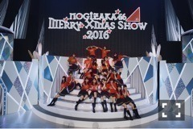
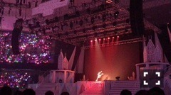
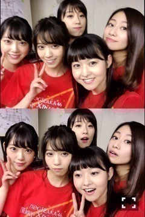
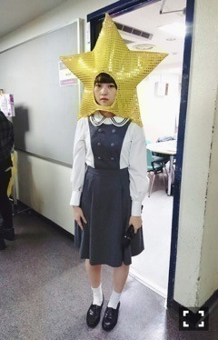

| 2016/12 10 Sat | 不等号。752回目 |

Merry Xmas Show 2016
3期生お見立て会
武道館5日間終了致しました。
来てくださったみなさん
ありがとうございました！
選抜単独公演は初めてということで
セットリストも新鮮だった。
1人1曲プロデュース良かった！
初日にやらせていただきました。
踊りたい欲が凄かったので
ソロダンスからの不等号、
完全オリジナルダンスを提案したー
衣装も含め、大好きな曲です。
真夏のオフショアガールの後だったから
どうしようかと思った(°▽°)

武道館でソロダンスは一生の思い出。
腹の底にあるものを全身で使うあの感じ。
踊れて幸せでした。
おとぎ話みたい、、、
他に参加したのは
みなみの13金、
一実のあらロマ、
日芽香の行くあて、
まいやん軍団の白米様→白麻衣様！
どれも楽しかった＼(^^)／

そういえば発表された5thバースデーライブ、
2月20日21日22日の3日間
さいたまスーパーアリーナに決まりました。
どんな景色なんだろう、、
誕生日、21歳、デビュー5周年。
奈々未！！！！！
特別感！！
どうか良いライブになりますように。

一足早いクリスマスでしたが
どうだったかなー
アンダラ2日目、乃木團とメンバーの
コラボレーションかっこよかった、、、
年末までまだまだ忙しくて有難い。
年明けは報告したいこと割とあるな〜〜

今月のMdN、お相手は
アートディレクターの木村豊さんです。
過去に手掛けたCDジャケットについて
お話を聞きました！
"おしゃれ" "洒落てる"
皆さんはこのふたつの違いを
どう説明するかな。
椎名林檎さんの違和感の格好良さ、
東京事変さんのタイトルの奥深さ、
やはり好きだなあと改めて思いました。。
食レポって難しいね！！！、！！！
まりか
コメント(661)
2016/12/10 22:50